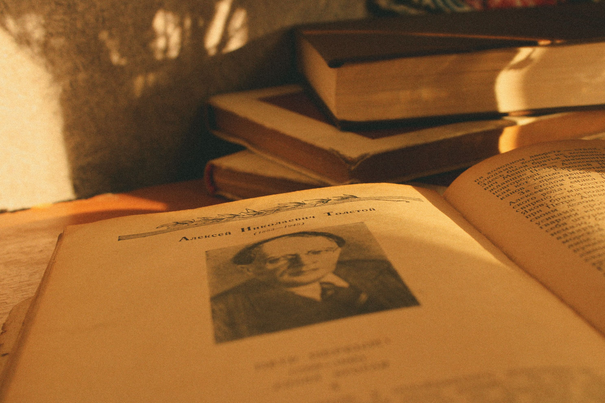

| Действие | Правильно | Неправильно |
|---|---|---|
| Дискуссия | Уважать мнение | Переходить на личности |
| Чат | Ждать встречи | Спойлерить сюжет |
| Разговор | Слушать спикера | Перебивать других |

Жанры
Мы не ограничиваем себя строгими рамками и стараемся выбирать книги разных направлений, чтобы каждый участник мог открыть для себя что-то новое. В поле нашего зрения регулярно попадает классическая литература — проверенные временем шедевры отечественных и зарубежных авторов. Также мы активно читаем современную прозу: громкие новинки, лауреаты премий и актуальные романы.
Встречи
Наши заседания проходят в гибридном формате, чтобы участвовать мог каждый. Очные встречи проводятся каждые две недели по субботам в уютном кафе в центре города, а сама беседа длится около двух часов. Для тех, кто находится в других городах или не может присутствовать лично, мы организуем онлайн-созвоны в Zoom или Telegram раз в месяц. Каждая встреча начинается с короткого обзора автора и эпохи от модератора, после чего участники по очереди делятся своими впечатлениями. Обсуждение проходит в свободном и дружеском формате — у нас нет «неправильных» мыслей.
- Объем книги желательно не должен превышать 500–600 страниц, чтобы все успели дочитать её к сроку.
- Произведение должно быть доступно в электронном и печатном форматах для удобства всех участников.
- Жанр книги должен соответствовать текущим интересам клуба и не повторять тему прошлого месяца.
Полезные ресурсы для поиска интересных книг:
- Образовательный проект «Полка» — статьи о главных русских книгах.
- Книжная социальная сеть LiveLib — отзывы, рецензии и читательские рейтинги.